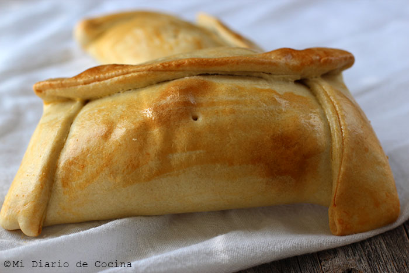

Empaná e' pino

Su wena y jugosa empaná e' pino pal disiocho
Plato típico chileno, infaltable para el 18.
El plato consiste básicamente en una masa horneada rellena de un "pino", ¿Pino? ¿De ese que crece en las montañas?, pues no, el pino que llevan las
empanadas de pino consiste en una mezcla de cebolla, carne molida y algunos condimentos.
Ingredientes
Para la masa
- 600g de harina
- 1 cucharadita de sal
- 120g de manteca vegetal
- 40ml de vino blanco
- agua tibia
Para el relleno
- 1 cucharada de aceite vegetal
- 2 cebollas picadas en cubos finos
- 500g de carne en cubos bien pequeños (posta rosada o negra)
- 1/2 cucharadita de ajo en polvo gourmet
- un montón de weás más
Preparación
- Hacer la masa
- Hacer el pino
- Meter el pino dentro de la masa
- Listo!
~Volver a la página principal~